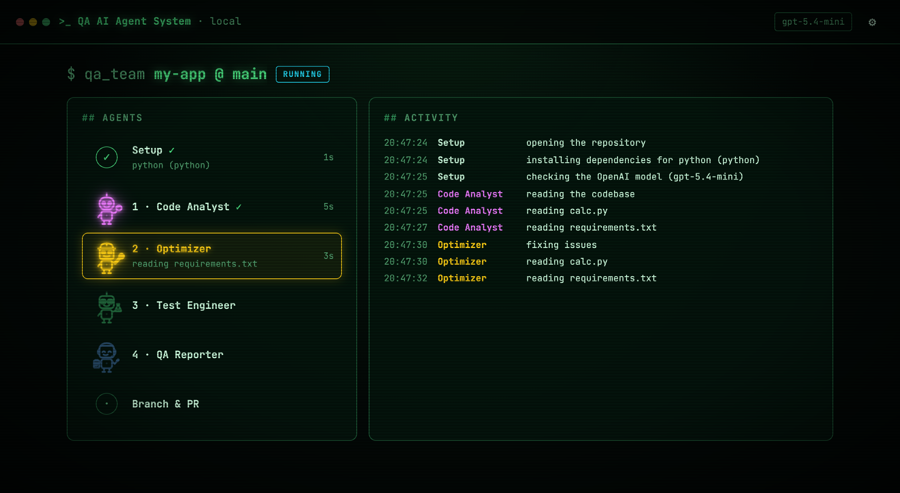

Need a Code Proofread?
Four AI agents read your project, fix the bugs they find, write and run tests, and report what they did, on a separate branch with a pull request you can review.
$ git clone https://github.com/professor-jo/qa-agentic-system.git $ cd qa-agentic-system && python3.12 -m venv .venv && source .venv/bin/activate $ pip install -e . $ qa_team ui # opens the app in your browser
How it works
Paste a GitHub link or drop a project folder. The crew takes it from there.
Reads the whole project and lists bugs, risks and what to test.
Fixes the bugs and slow code, then suggests modern UI and library upgrades.
Writes tests and runs them. Failures go back to 01 and 02 until everything passes.
Writes a clear report and opens a pull request for you to review.

Bring your own API key
The agents are powered by OpenAI. Everyone uses their own API key. There's no shared key and no account with us.
- 1Create a key at platform.openai.com/api-keys (OpenAI asks you to add a payment method).
- 2Start the app with
qa_team ui. The first screen asks for your key in Step 1. - 3Paste it and press Save key. The app checks it with OpenAI, then unlocks.
.env file that's git-ignored and never uploaded.gpt-5.4-mini (fast and affordable). Change it any time in Settings.Install
About two minutes. You need Python 3.11–3.13 and Git; Node.js too if you'll check JavaScript projects.
# 1. download $ git clone https://github.com/professor-jo/qa-agentic-system.git $ cd qa-agentic-system # 2. install (in its own virtual environment) $ python3.12 -m venv .venv $ source .venv/bin/activate $ pip install -e . # 3. run: opens http://127.0.0.1:8765 in your browser $ qa_team ui
Prefer the terminal? Run qa_team for the command-line version. Optional: install the
GitHub CLI and run gh auth login so the app can open pull requests for you.
What you get
Everything lands on a new branch, so your main branch is never touched.
In your repository
- The files the Optimizer fixed
agentic test/: the new tests, plus a short test reportAgentic QA Report/: the full report of what was found, fixed and tested- A pull request to review and merge (or close)
Safe by design
- Your API key never leaves your machine
- Each agent can only do its own job; tests can't touch your source
- Stop any time and discard every change
- Tests run the project's code, so only use it on code you trust
Requirements
| Python 3.11–3.13 | runs the app |
| Git | to clone repositories and create the QA branch |
| Node.js 18+ | only for testing JavaScript / TypeScript projects |
| OpenAI API key | your own; see Bring your own API key |
| GitHub CLI | optional, for opening pull requests automatically |